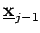

Inhalt Index DeskTop Bronstein

 Optimierung Diskrete dynamische Optimierung Bellmannsche Funktionalgleichungen
Optimierung Diskrete dynamische Optimierung Bellmannsche Funktionalgleichungen


Es werden die folgenden Funktionen definiert:
| (18.128) |
Falls keine Politik existiert, die den Zustand  in einen Endzustand überführt, wird gesetzt. Die Ausnutzung von Separierbarkeit und Minimumvertauschbarkeit sowie der dynamischen Nebenbedingungen liefert für j=1(1)n: